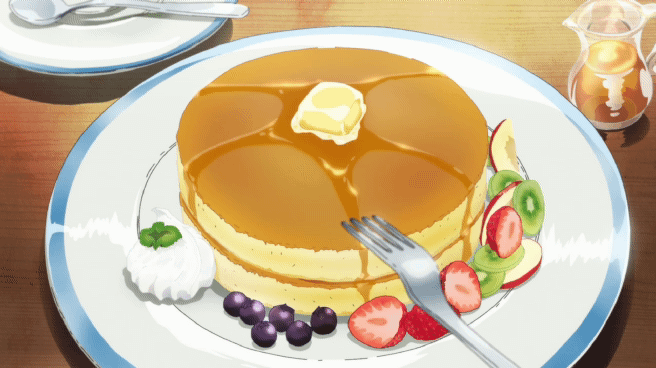
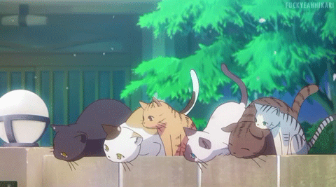
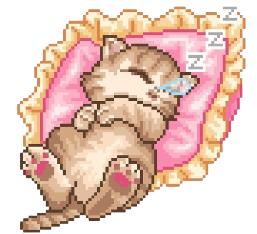
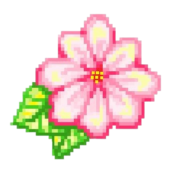
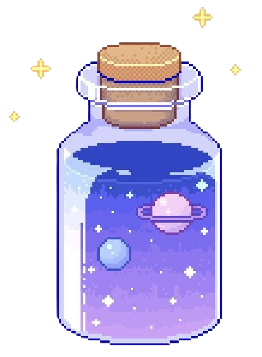

THE TOWN GAZETTE: The First Edition 📰✨
During her long, quiet mission in the real world (a.k.a. her internship), Naomi discovered a secret. The days were always the same, filled with sleepy spreadsheets and the steady *tick-tock* of the clock. To make time feel a little more friendly, she would put on her headphones and play her favorite comfort song: "Rewind".
It was her little secret ritual. But one day, something magical happened. As the dreamy music started to play, her computer screen began to glow with a soft, pink light. The pixels on the screen stopped being boring and started to dance, swirling around like tiny, sparkling fireflies. It wasn't a computer anymore—it was a window.
Peeking through, she saw a perfect, cozy day playing out like a movie. A world bathed in a forever-sunset, where every little thing felt happy and safe. She realized the song wasn't just a song; it was a key. A key that let her rewind time and open a portal to a world made of only the best memories. And that’s how Naomi's Little Town was born. Welcome to the town that memory built! ♡
Daily Town Proclamation 📜💖
Future Town Projects (Memory Blueprints!) 🏗️🎀
These are blueprints for happy moments we plan to save forever in our town's memory bank!

Blueprint for 'Pancake Paradise': A perfect, endlessly repeating brunch<3
The Mayor's Mission: To make this the coziest memory collection on the internet.

The 'Dream Wardrobe' Archive: Saving the feeling of finding the perfect outfit!

The 'Little Joys' Program: Bottling up small, sweet moments for everyone to find.

Town Ordinance Voting! 🗳️✨
Help the Mayor decide which memory to build next! Your vote counts!

Build a Cozy Cat Cafe 0 vote
Plant a Magical Flower Garden 0 voteMemory & Wish Jar ✨
Got a happy memory or a sweet wish? Place it in the jar so we can keep it safe forever!

Current Development Status!
- Current Mission: Exploring the 'real world' (internship) to find new, happy moments worth saving!
- Next Memory to Save: The mid-semester break! We're going to capture all its relaxing vibes for a new town festival.
- Memory Sync Status: ▓▓▓▓▓▓░░░░ (60%) - Syncing requires lots of cozy games & music!